P-01 · S/W 프로젝트 · 박찬우
SpineLog
척추 질환자가 통증·체크인·활동을 기록하면, DB에 저장된 규칙으로 오늘 해도 되는 운동을 추천 · 주의 · 금기로 판정해 주는 서비스입니다. 현재는 LLM 없이 규칙으로만 판정합니다.
23API (FastAPI)
19판정 규칙
33DB 테이블 (MySQL 8)
7대상 척추 질환
이 페이지는 발표용 미리보기입니다. 실제 서버(API + DB)는 아직 공개 배포 전이라, 아래 "판정 미리보기"는 서버와 같은 규칙 로직을 브라우저에서 재현한 것입니다. 의료 조언이 아니며, 규칙 데이터는 검토 중입니다.
판정 미리보기
왼쪽에서 내 상태를 바꾸고 통증을 기록해 보세요. 서버의 rule_engine.py와 같은 순서(상태 모으기 → 규칙 고르기 → 운동마다 하나로 → 판정 상태)로 계산합니다.
① 내 상태 PUT /api/me/…
② 오늘 아침 체크인 PUT /api/checkins/today
수면분
③ 어제~오늘 활동의 동작 POST /api/activity-logs
지금 규칙 중 동작·수면 조건을 쓰는 규칙은 0개라, 이 값은 판정 결과를 바꾸지 않습니다 (빠진 자료 표시만 바뀜).
④ 통증 기록 POST /api/pain-logs
6
오늘 기록 GET /api/pain-logs?date=
아직 없음
응답 JSON (서버 응답과 같은 모양)
{}구조
화면은 DB에 직접 가지 않고 항상 API를 거칩니다.
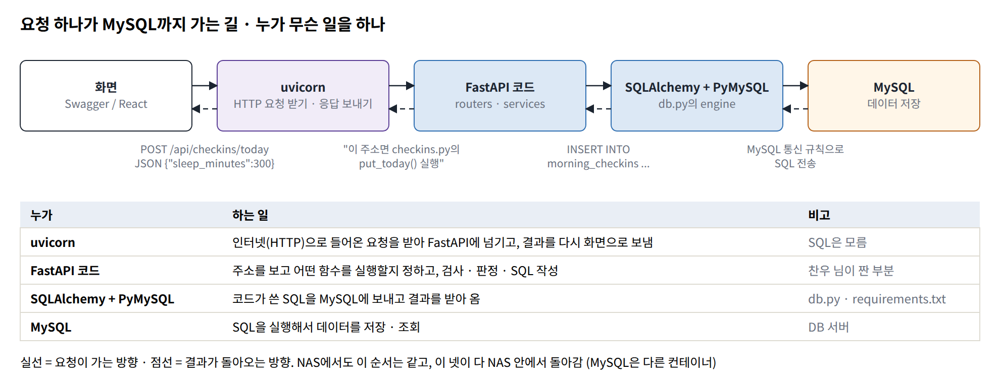
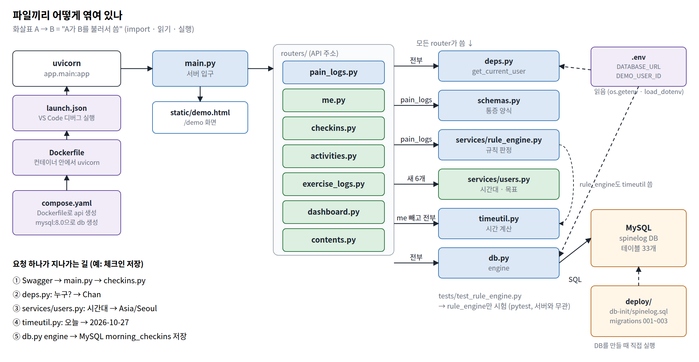
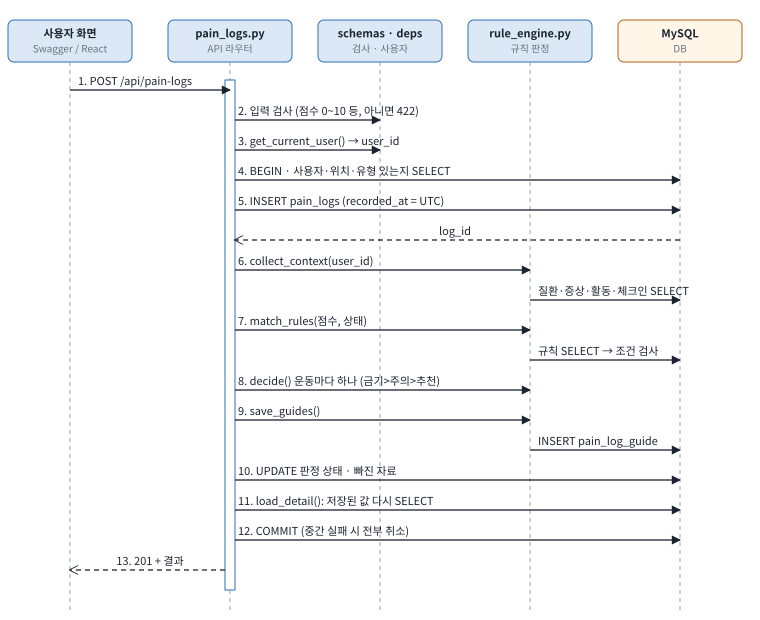
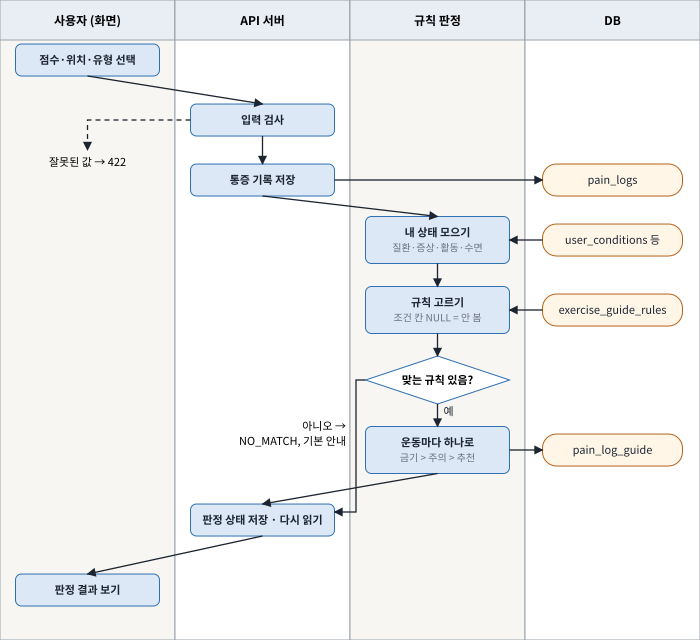
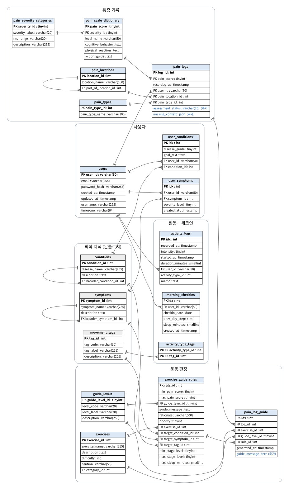
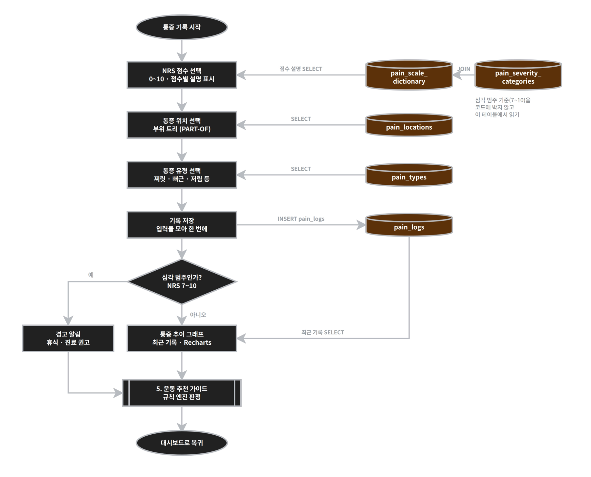

API 23개
FastAPI · SQLAlchemy(text SQL) · PyMySQL · MySQL 8. 시각은 UTC로 저장하고, '오늘'은 사용자 시간대(Asia/Seoul)로 계산합니다.
| 주소 | 하는 일 |
|---|
실행 결과 (Swagger)
2026-10-14 학교 PC에서 실제 서버를 실행한 화면입니다. 이때 DB에는 질환 정보가 없어 판정이 NO_MATCH로 나왔습니다.
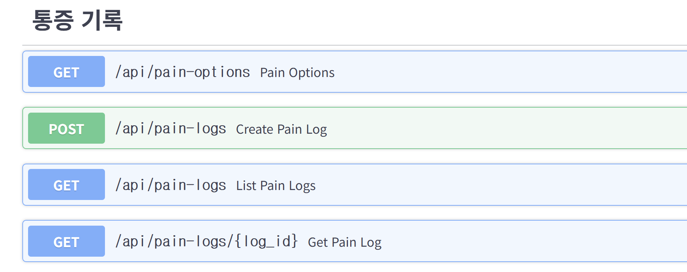
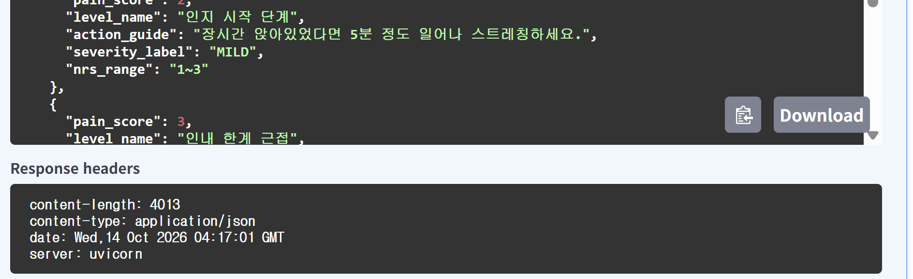
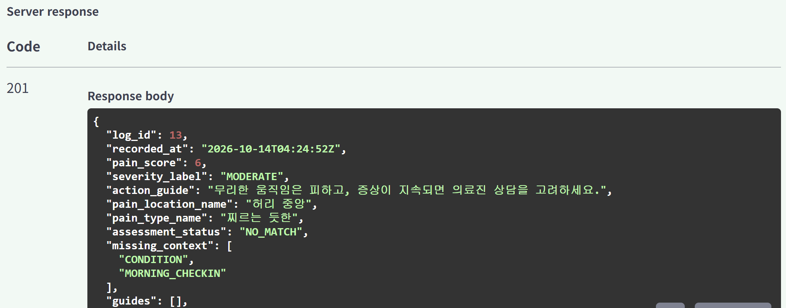

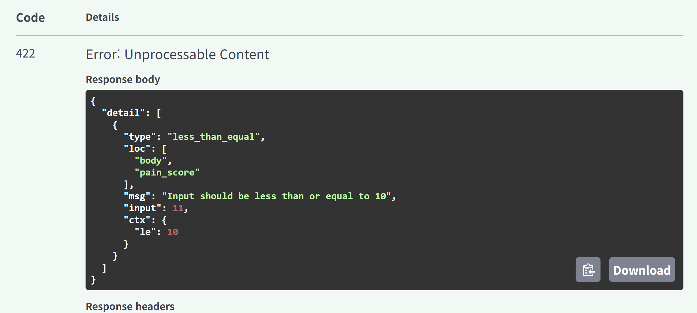
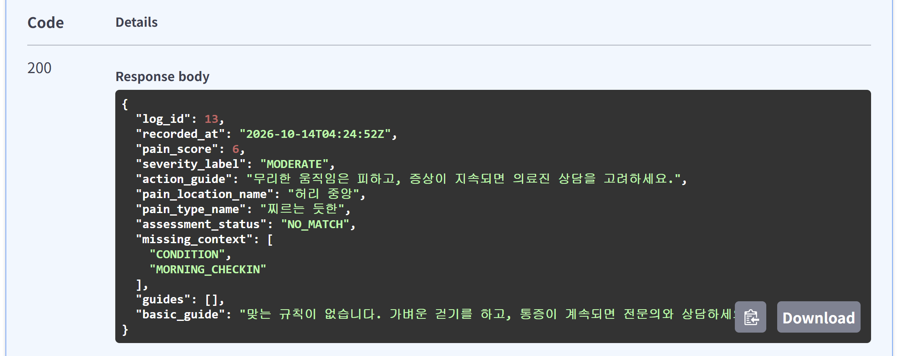


시연 영상 (10/14, 시험용 화면 /demo)
진행 상황
기준일 2026-10-28 · 상태는 "코드 작성 → 테스트 DB 확인 → 내 PC 확인" 3단계로 구분
| 항목 | 상태 | 메모 |
|---|---|---|
| DB 설계 (33개 테이블) · 기준 데이터 | 완료 | 질환 7 · 증상 8 · 운동 12 · 규칙 19 |
| 통증 기록 API 4개 + 규칙 판정 | 완료 | 10/14 발표 때 Swagger로 확인 |
| 내 정보 · 체크인 · 활동 · 운동 기록 · 대시보드 · 콘텐츠 API 19개 | 테스트 DB 확인 | 내 PC 확인 대기 (마이그레이션 003 필요) |
| 규칙 데이터 점검 | 점검 중 | 19개 중 13개에서 운동 번호와 안내 문구가 서로 다른 운동을 가리킴 → 수정 결정 필요 |
| 회원가입 · 로그인 (JWT) | 예정 | 지금은 시연 사용자 1명 |
| React 화면 | 예정 | 로그인 → 온보딩 → 체크인 → 통증 · 판정 → 대시보드 |
| NAS 배포 (Docker) · HTTPS | 예정 | 이미지 빌드까지 확인 |
규칙 데이터 점검표
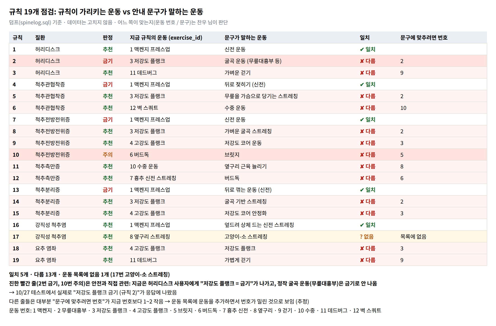
앞으로 4주
| 기간 | 할 일 |
|---|---|
| 10/27 ~ 11/2 | API 내 PC 확인 · 규칙 데이터 정리 |
| 11/3 ~ 11/9 | 회원가입 · 로그인 · 데이터(활동 종류, 의학 콘텐츠) |
| 11/10 ~ 11/16 | React 화면 (필수 흐름 한 바퀴) |
| 11/17 ~ 11/23 | NAS 배포 · 통합 테스트 · 발표 준비 |